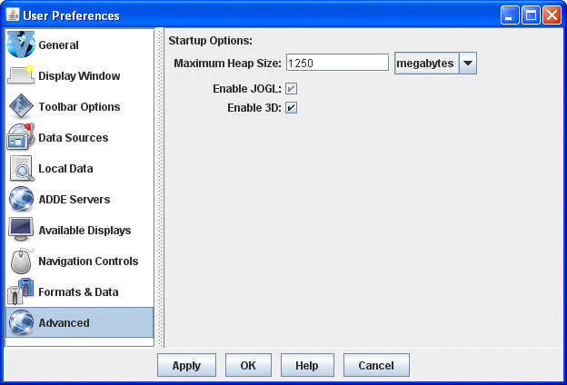

Advanced Preferences
The User Preferences window is accessed in the Main Display window through the Edit->Preferences menu.
The Advanced tab allows for changing options that require
a restart in order for them to take effect. To
configure the settings before running McIDAS-V, execute runMcV-Config on Linux/macOS platforms or runMcV.bat on Windows from the directory where McIDAS-V was installed (normally McIDAS-V-System)
or by selecting Configure McIDAS-V in the Windows Start menu. The below image represents the default settings for the Advanced tab.

Image 1: Advanced Preferences (Default)
Startup Options
- Memory - Sets the Java heap size, which is the amount of
memory allocated by McIDAS-V at startup. Use the first bubble to choose a percentage
of available memory, or use the second bubble to enter a specific value. The
new amount of memory will be saved and used in subsequent sessions. Note that the value in the text field is an approximate amount of memory for McIDAS-V to use, meaning the actual value seen in the Main Display may be slightly different. For more
information, see the Setting Memory Usage section in Downloading
and Running McIDAS-V.
- Specify default bundle - Loads the selected bundle at startup
by setting the "-bundle" command line flag.
Select a default bundle by clicking the button. This navigates to the McIDAS-V/bundles directory, where any favorite bundles will be listed.
- Load default layout - Restores the previously-saved window
configuration upon startup. Uncheck to use the initial window layout of one
Main Display window with one panel. For more information, see the Menu Bar's Default Layout section.
- Enable 3D controls - Controls the value of the "idv.3d" IDV
property and gives the ability to view and navigate in 3D space with
the 3D controls in the Main Display window's Viewpoint
Toolbar. Uncheck to override the default 3D behavior of McIDAS-V and to
switch to a 2D view with the Viewpoint Toolbar removed.
- Enable JOGL (Mac OS X/macOS only) -Sets
the "j3d.rend" property to "jogl", which sets Java3D to use JOGL (Java OpenGL)
as the graphics rendering backend. Disabling will omit the "j3d.rend" property,
causing Java3D to use its default OpenGL backend.
- Enable access to geometry by reference - Sets the "visad.java3d.geometryByRef" property
to true and enables the visualization
of larger datasets because of the more efficient use of memory. Unchecking this
option can help to remove random/extraneous map lines that sometimes appear
in displays of image data. This is a problem that may occur more frequently
on systems with ATI graphics cards.
- Enable access to image data by reference - Sets the "visad.java3d.imageByRef" property
to true and improves the rendering of satellite imagery in the satellite's
native projection, removing the jagged edges at the limb and/or
gaps at the dateline that sometimes appear in displays of image data. It is
recommended that this option be checked.
- Enable Non-Power of Two (NPOT) textures - Sets the "visad.java3d.textureNpot" property
to true and enables the visualization
of larger datasets because of the more efficient use of memory. Unchecking this
option may be necessary on machines with graphics cards that do not support
NPOT.
- Texture Size - Sets the maximum number of pixels in a single texture or image. Textures that exceed the pixel count specified will be transparently split into multiple textures as needed.
- Log Level - Sets the amount of logging information that will go to the mcidasv.log file in the /McIDAS-V/ directory. The options for this menu item are TRACE, DEBUG, INFO, WARN, ERROR and OFF. TRACE puts the most logging information into the log file and the subsequent options put less information into the log file until OFF doesn't put anything in the log file. The default logging level is INFO. The log file will include lines for the chosen logging level, as well as any lesser logging levels. For example, INFO will include INFO, WARN and ERROR lines in the log file. Listed below is a description of what will be put in the log file for each of the settings:
- TRACE - Outputs all logging information.
- DEBUG - Outputs information about choosers, the start and exit of the session, error messages and stack traces.
- INFO - Outputs information about the start and exit of the session, error messages and stack traces.
- WARN - Outputs error messages and stack traces.
- ERROR - Outputs error messages.
- OFF - Outputs no information.
- Enable concurrent mark-sweep garbage collector - Passes "-XX:+UseConcMarkSweepGC
-XX:+CMSClassUnloadingEnabled" to the McIDAS-V JVM (Java
Virtual Machine) and uses shorter
garbage collection pauses by performing most garbage collection activity while
the McIDAS-V threads are running. Unchecking this option uses the JVM defaults,
which vary by Operating System.
- Java Flags - Allows for manually entered Java flags to be used at the startup of McIDAS-V.